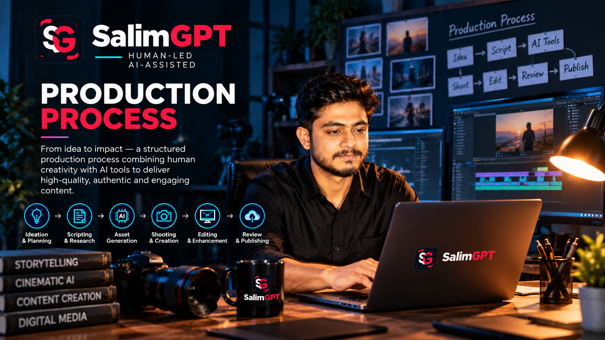

Topic Development
Define the subject, documentary question, intended scope and why the topic is worth developing.
HOW WE WORK
SalimGPT develops documentaries through a structured human-led workflow that connects research, evidence, writing, visual development, production, multilingual adaptation, fact-checking and editorial review.
AI may assist selected stages of the workflow, but editorial judgment, source verification, fact-checking, creative direction, review and final publication approval remain human responsibilities.
PROCESS PRINCIPLE
Documentary production is not treated as a final visual step added after research. Editorial decisions begin with the subject itself and continue through research, scripting, design, narration, editing and publication.
Each stage can affect factual meaning. A script can overstate a source, a visual can imply the wrong event, a translation can change certainty and an edit can remove necessary context.
The production process is therefore designed to keep evidence, editorial intent and final presentation connected throughout the workflow.
DOCUMENTARY WORKFLOW
Not every documentary requires the same production depth, but these stages describe the main editorial and creative functions within the SalimGPT workflow.
Define the subject, documentary question, intended scope and why the topic is worth developing.
Discover relevant sources, map the subject, assess evidence and identify factual gaps or unresolved questions.
Connect significant claims with supporting material, limitations, chronology and contextual information.
Turn research into a structured narrative while keeping claims, uncertainty and attribution aligned with the evidence.
Decide how archival material, graphics, illustration, maps, reconstructions or synthetic media can support the story without creating a false factual impression.
Develop narration, graphics, motion, visual sequences, audio and other production elements required by the documentary.
Assemble the documentary while reviewing pacing, clarity, continuity, context and the factual meaning created by the final sequence.
Translate or localize material while preserving factual meaning, attribution, terminology and appropriate certainty.
Reconnect important claims, numbers, captions, visuals and translated material with supporting evidence.
Complete human editorial review, approve the finished work and publish it through the appropriate SalimGPT channel or language edition.

FROM RESEARCH TO SCRIPT
Documentary writing requires compression. Large amounts of research may need to become a clear sequence of narration, visual explanation and contextual information.
That compression can create risk if uncertainty, attribution or important qualifications disappear during storytelling.
Script development therefore remains connected to source material and can return to research whenever a narrative claim requires clarification or stronger support.
VISUAL PRODUCTION
Documentary visuals can explain, illustrate, reconstruct or provide context, but they can also imply facts that are never stated in narration.
Historical or documentary media should be used with enough context to avoid implying the wrong event, location or period.
Maps, diagrams, charts and explanatory artwork should clarify information rather than exaggerate what the evidence establishes.
Recreated scenes or illustrative sequences should not be presented in a way that falsely suggests they are direct recordings of an event.
AI-generated or synthetic visuals can be used as production tools where appropriate, but their role must remain subject to human editorial direction and review.
EDITING & ASSEMBLY
The order of scenes, narration, graphics and quotations can change the way audiences understand the evidence. Editorial review therefore considers the meaning created by the finished sequence rather than evaluating each element only in isolation.
Cuts that improve pacing should not remove qualifications or chronology that materially affect factual interpretation.
Does the order of material imply a relationship the evidence does not support?
Has necessary context been lost while shortening the documentary?
Is visual or narrative emphasis proportionate to the evidence?
Do narration, graphics, captions and visuals remain factually consistent?
AI-ASSISTED PRODUCTION
AI tools may assist selected research, drafting, transcription, language, localization, visual development, synthetic media or other production tasks.
Because AI outputs can contain errors, fabricated information, misleading summaries or inappropriate visual interpretations, they remain subject to human verification, creative direction and editorial review.
MULTILINGUAL PRODUCTION
Translation and localization are production stages, not simple word substitution. A change in terminology, certainty, attribution or cultural context can alter the factual meaning of a documentary.
Multilingual versions therefore remain subject to review so the underlying research and editorial intent are preserved across available language editions.
REVIEW GATES
Problems are easier to correct when they are identified before they become embedded in later stages of the documentary.
Examine whether the evidence base is sufficient for the planned documentary direction.
Check structure, factual claims, context, attribution and whether the script accurately reflects the evidence.
Examine whether graphics, images, reconstructions and synthetic media accurately support the documentary.
Reconnect significant claims, numbers, captions and other factual elements with their supporting sources.
Confirm that localization preserves factual meaning, terminology, uncertainty and attribution.
Evaluate the finished documentary as a complete work before a human publication decision is made.
FINAL APPROVAL
A documentary can be technically finished while still requiring factual, contextual, visual or editorial changes. Final approval considers the work as a complete publication rather than only whether production tasks have been completed.
SalimGPT’s final publication decision remains human-led.
AFTER PUBLICATION
New information, factual errors, translation issues, visual problems or other substantive concerns can emerge after a documentary is published.
When necessary, published material can be reviewed through SalimGPT’s corrections and updates process.
HOW WE WORK
How research, evidence and storytelling connect.
How documentary research is structured before production.
How finished claims are checked against evidence.
Principles guiding judgment, review and publication.
How AI tools support production without owning editorial decisions.
How visual production and synthetic media are reviewed.